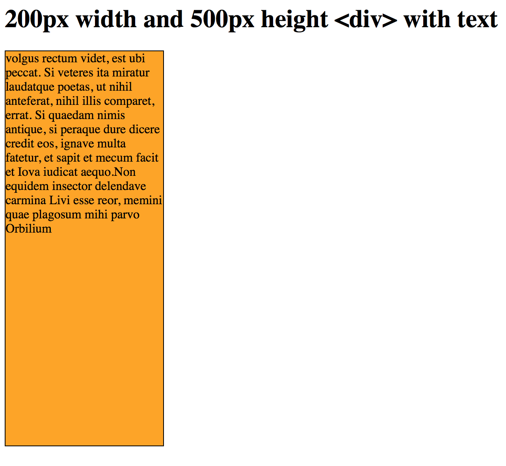

设定高度[height]
注意上一个例子，盒子里内容的长短决定了盒子的高度。我们可以通过
height属性来设定一个元素的高度。比方说，我们要把上面那个例子中的盒子高度设定为500像素：
div.box {
height: 500px;
width: 200px;
border: 1px solid black;
background: orange;
}

这一章向你介绍了CSS的盒状模型。就像你所看到的，盒状模型为你提供了许多新的选择。之前，可能你一直在用HTML表格（table）来进行页面布局；但是现在，你应该已经具备采用CSS和盒状模型来进行更加精确而优雅、并且符合W3C标准的页面布局的能力了。